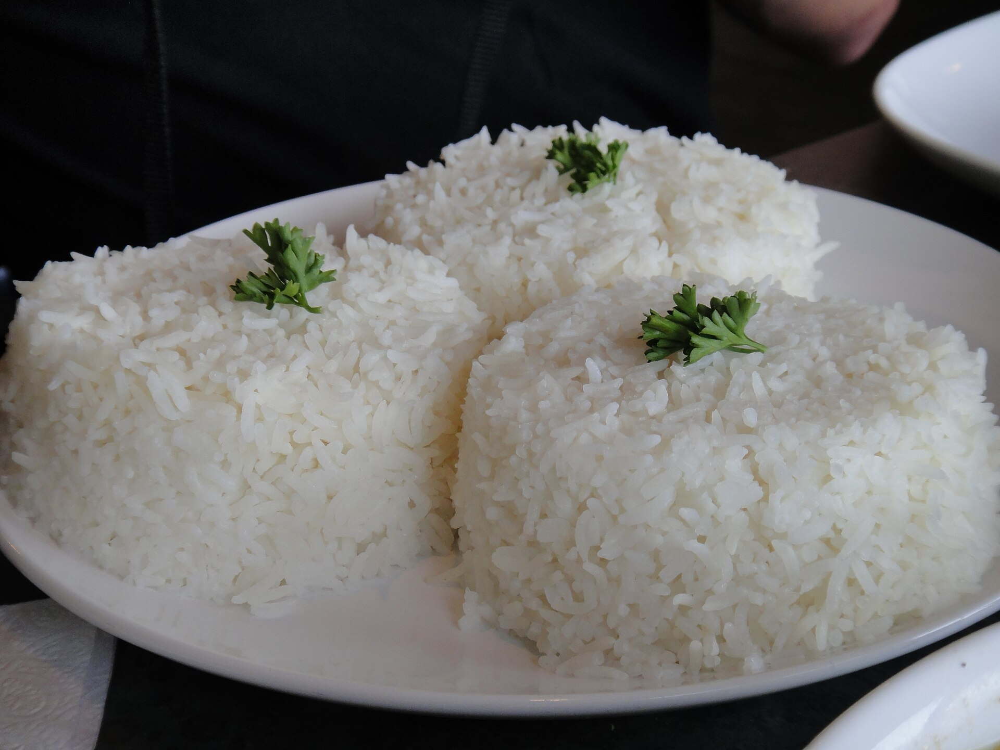

Home
White Rice

Image by Calgary Reviews
Description
A quiet comfort and a versatile dish to go with any meal!
White rice is a classic staple in many households. It doesn't stand out and still has the power to help fill a
needing dish and an empty belly. Not only a welcome side dish, but it can also become a versatile food item in other dishes!
You can shake up this recipe by replacing the water with a stock of your choice, adding a meat or vegetable to cook along
with it, or using the leftovers for other classic meals such as fried rice! Make sure to try out different types of rice as well.
Tools & Ingredients
- Rice Cooker
- Rice Pot
- Measuring Cup (The one that comes with the rice cooker)
- Rice
- Water
Steps
- Using the measuring cup, scoop 2 cups of rice into the rice pot.
- Wash the rice in the rice pot throughly by mixing thr rice and running
water with your hands. Do not crush the rice during this step.
- Rinse out the water keeping as much rice in the pot as possible, while letting any impurities run out.
- Repeat until water in the rice pot runs mostly clear.
- Drain as much of the water from the pot as possible.
- Fill the rice pot with water. If your rice pot comes with guides on the side, fill up to the number of rice scoops
put into it.
- If your rice pot does not have guides, fill water in the rice pot with a little bit of water over the surface of the
rice. Place your index finger directly on top of the rice's surface. Add water until the water comes up to the first
line of your index finger.
- Place rice pot into the rice cooker and plug it in. Push the rice cooker from "warm" to "cook". If your rice
cooker has additional settings for different types of rice, please refer to the manufacturer's manual.
- The rice cooker will automatically switch to "warm" when it is done cooking. The cooking process normally takes
around 20 minutes depending on the brand of rice cooker. Some models might even give an alarm!
- Give the rice around 5 minutes on warm to rest. Open the rice cooker and mix the rice around to air out any
overly moist bits.
- Plate rice into a bowl or on your plate with a main dish and serve!
Make a complete breakfast dish with other foods such as Portuguese sausage or
scrambled eggs!